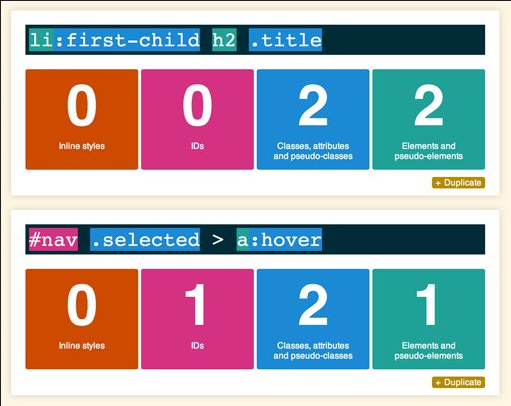

Apa itu Specificity Selector?
Specificity Selector yaitu setiap deklarasi CSS (selector) memiliki berat yang berbeda. Berat tersebut menentukan seberapa specifik sebuah elemen dapat dipilih oleh selector.

jika merasa bingung dalam menghitungnya, silahkan kunjungi web berikut!!!
http://specificity.keegan.stlihat contoh dibawah ini!!!
contoh lain!!!
list item (xiomi) akan berubah warna sendiri karena pada selector di css nya lebih spesifik dari pada yang lain, yang bisa membuatnya jadi berbeda warna